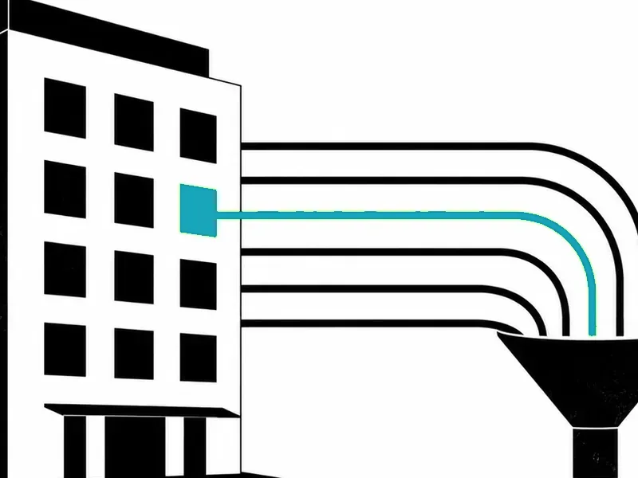
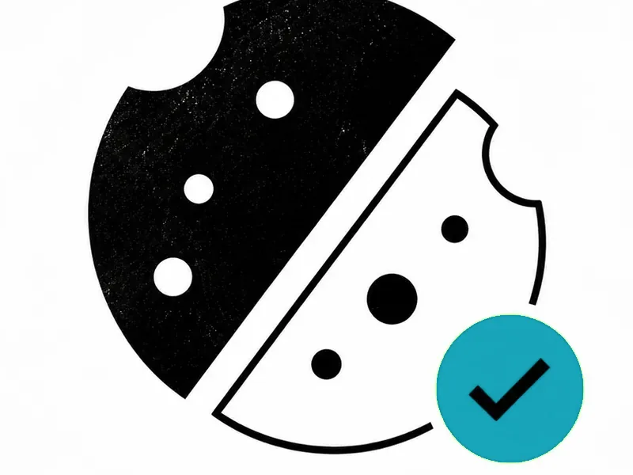
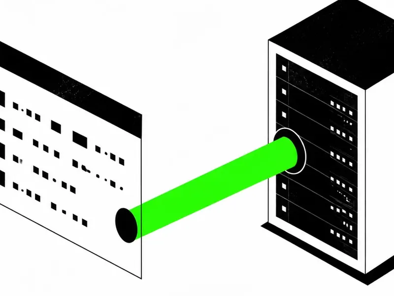
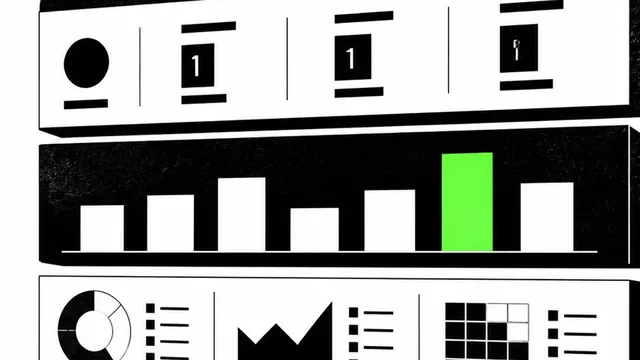

Blog de analítica web y datos

Analítica web para hoteles: KPIs, embudo y trampas El embudo del motor de reservas, la paridad con las OTAs y por qué GA4 nunca ve todas las reservas. Leer el artículo → Auditoría GA4: cómo saber si puedes fiarte de tus datos Los 7 fallos que encuentro en casi todas las cuentas y el checklist paso a paso para destaparlos. Leer el artículo →
Implementar Consent Mode v2: guía sin humo Basic o Advanced, el orden de carga que decide si cumples y la validación de los cuatro escenarios. Leer el artículo →
GTM server side: cuándo compensa y cuándo no Lo que arregla, lo que sigue igual y los costes mensuales que casi ningún vendedor menciona. Leer el artículo →
Cómo montar un dashboard que la gente abra cada semana La decisión antes que el gráfico, tres niveles de lectura y los errores que matan un panel. Leer el artículo →